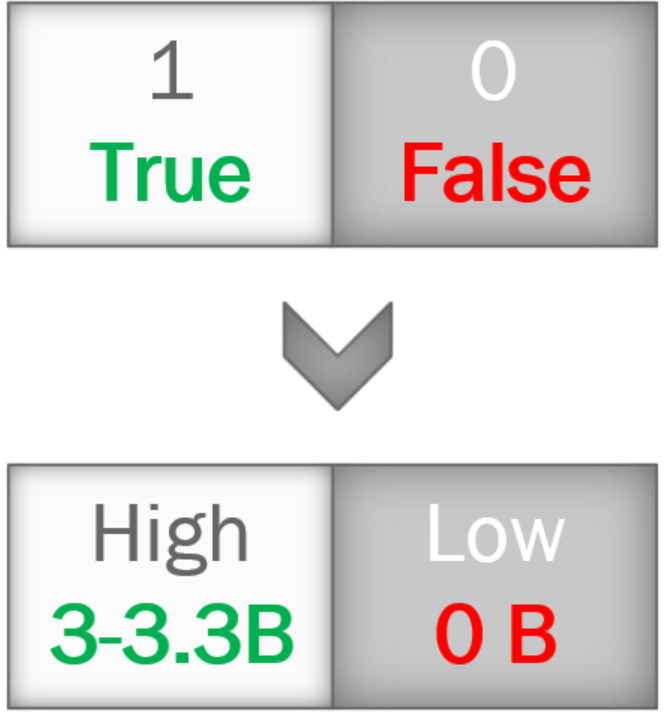

Ссылка это псевдоним переменной.
Курс
Предисловие
Специальность “Информационно-измерительная техника” направлена на создание и применение устройств и систем, составляющих основу информационных технологий в различных отраслях промышленности. Особое внимание должно уделяться компьютерной или микропроцессорной техники как со стороны аппаратного, так и программного обеспечения.
В современном мире неотъемлемой частью практически любого измерительного устройства является микроконтроллер. Важной особенностью применения микроконтроллеров в измерительных устройствах является тот факт, что для надежной работы такого устройства необходимо не только надежная аппаратура, но и качественное и надежное программное обеспечение управляющее микроконтроллером. В настоящее время существует очень много методических пособий и книг по разработке устройств с использованием микроконтроллеров, однако вопросы разработки программного обеспечения сводятся к простым примерам на языке ассемблера и Си. Кроме того, существующие пособия значительно отстают от быстроменяющихся изменений в микропроцессорной технике и тем более языках программирования. Если еще недавно прорывом в программирование был выход стандарта С11, то уже сегодня существует стандарт С20 и уже активна работа по стандарту С++23. Следует также заменить, что автором не найдено ни одной книги или пособия, которые бы затрагивали, например, такие области разработки ПО для микроконтроллеров, как архитектура программного обеспечения, использования UML и средств моделирования архитектуры.
Предыдущие методические пособия для курса ПОИП, например, [2] были ориентированы на широкие области применения информационных технологий, начиная от микроконтроллеров и заканчивая базами данных. Однако по мнению автора, невозможно хорошо разобраться и усвоить столь большой объем разноплановой информации. В итоге курс и лабораторные работы дают лишь поверхностное представление о разработке программного обеспечения, а будущие инженеры не до конца усваивают материал и не могут детально разобраться в принципах разработки программного обеспечения для измерительных устройств. Основываясь на данном предубеждение, автором выбран иной путь, а именно более узкоспециализированное и детальное рассмотрение принципов разработки программного обеспечения измерительных устройств на базе современных микроконтроллеров.
Большую помощь в разработке методического материала оказал обучающийся на кафедре ИнИТ Загоскин Я. Современные быстроизменяющиеся и эволюционирующие условия диктуют и новый подход к образованию, а именно все больший упор делается на самообразование, самоусовершенствование и самостоятельный поиск нужной информации с технической документации, системах поиска, книгах.
Поэтому довольно большая часть разделов предлагается студентам для самостоятельного изучения и выполнения в качестве домашней практической работы. Большое влияние на составление данного методического пособия оказал труд [1] Недяка С.П., Шаропина Ю.Б. откуда были заимствованы некоторые подходы и организационная структура методического пособия.
Введение
Данное методическое пособие предназначено для выполнения лабораторных работ с использованием отладочных плат XNUCLEO F411RE для измерения физических величин на основе микроконтроллера STM32F411 с архитектурой Cortex-M4, операционной системы реального времени FreeRtos и языка программирования С++ 14 интегрированной средой разработки IAR Embedded Workbench for ARM ver. 8.20
Методическое пособие написано в рамках курса “Программное обеспечение измерительных процессов”, но оно будет полезным всем желающим освоить принципы разработки измерительных устройств на современных микроконтроллерах.
Предполагается, что для изучения данного курса у студентов есть хорошие знания микропроцессорной техники и навыки разработки ПО на языке С++ полученные на ранних курсах.
Методическое пособие состоит из 3 разделов. Первая часть ориентирована на создание проекта в IAR Embedded Workbench, работу с периферией микроконтроллера и возможности отладки системы IAR Embedded Workbench, работе с детальной разработкой простых классов на языке UML в пакете starUML. Вторая часть посвящена использованию прерываний, работе с операционной системой FreeRtos взаимодействию между задачами. Заключительная часть ориентирована на принцип разработки архитектуры программного обеспечения, шаблонам проектирования, разработки детальной архитектуры.
Модули связаны с курсовым проектированием в котором буду задействованы все части данного методического пособия.
В 2017 году компания “Метран” безвозмездно предоставила ЮУрГУ на кафедру информационно-измерительная техника 10 отладочных комплектов на базе микропроцессора Stm32F411RE на ядре Cortex M4 с различными модулями расширения включающие в себя модули Bluetooth, WiFi, графическим индикатором, различными сенсорами, включающие в себя датчики Холла, датчики влажности, температуры, звука, освещенности, дыма, положения и многое другое. По этой причине курс ПОИП и лабораторный практикум выполняется на отладочных платах XNUCLEO 411RE.
Лекция 1
Основные термины и определения
Встраиваемые вычислительные системы (Embedded systems)
Встраииваемая система (встроенная систеима, англ. embedded system) — специализированная
микропроцессорная система управления, концепция разработки которой заключается в том, что такая
система будет работать, будучи встроенной непосредственно в устройство, которым она управляет.Микроконтроллер (англ. Micro Controller Unit, MCU)
Микросхема, предназначенная для управления электронными устройствами. Типичный микроконтроллер
сочетает на одном кристалле функции процессора и периферийных устройств, содержит ОЗУ и (или) ПЗУ.
По сути, это однокристальный компьютер, способный выполнять простые задачи.Контроллер
1. Изделие для автоматизации и управления.
2. Микросхема или часть микросхемы реализующая отдельную функцию или задачу управления.Отладочная, oценочная или демонстрационная плата
Электронный модуль, как правило, в бескорпусном изготовлении, содержащий минимально необходимый
набор микросхем для разработки ПО для МК.Интегрированная среда разработки. IDE(англ. IDE, Integrated development environment)
Cистема программных средств, используемая программистами для разработки программного обеспечения.
Обычно, среда разработки включает в себя:
⦁ текстовый редактор,
⦁ компилятор и/или интерпретатор,
⦁ средства автоматизации сборки,
⦁ отладчик.SWD - Serial Wire Debug.
Двухпроводной отладочный портКомпилятор
Программа выполняющая трансляцию исходного кода из предметно-ориентированногоязыка на мишинно-
ориентированный язык.Компоновщик(Линковщик)
Программа собриющая исходный код на машино-ориентированном языке и производящую сборку в исполняемый
модульСтек
Абстрактный тип данных, представляющий собой список элементов,организованных по принципу LIFO
(англ. last in — first out,«последним пришёл — первым вышел»).
Возможны три операции со стеком: добавление элемента (иначе проталкивание, push), удаление элемента
(pop) и чтение головного элемента (peek).
Мы будем использовать определение Стека, в значении Аппартный стекАппаратный стек
В микроконтроллере стек - это непрерывная область памяти, адресуемая специальными регистрами SP
(указатель стека)Регистр
Сверхбыстрая память внутри процессора, предназначенная для хранения адресов и промежуточных
результатов вычислений (регистр общего назначения/регистр данных) или данных, необходимых для
работы самого процессора.Среда разработки программ для микроконтроллера
В учебных целях мы будем использовать интегрированную среду разработки IAR Workbench for ARM. Компания IAR бесплатно предлагает для ознакомления две версии своего продукта: версию evolution c полным функционалом и ограничением времени использования 30 дней и версию kickstart (в имени дистрибутива есть буквы KS) c ограничением на размер генерSируемого исполняемого кода -32 кбайт), но без ограничения времени использования.
Для студенческих нужд размера кода в 32КБ более чем достаточно. В курсе мы будем использовать IAR Embedded Workbench for ARM ver 8.40. Состав этого инструмента показан на Рисунке [IAR Workbench].
Состав интеграционной среды разработки IAR Workbench
Процесс разработки программного обеспечения в общем случае ничем не отличается от процесса разработки приложения для обычных компьютеров, который включает в себя проектирование (Design), разработка кода(Develop), отладка(Debug)

Рисунок 1. Процесс разработки с точки зрения IAR Workbench
Процесс создания исполняемого образа
Процесс преобразования кода на языке программирования высокого уровня С++ в файл, содержащий образ исполняемой программы, готовый для прошивки в микроконтроллер можно разделить на два этапа:
Трансляция кода в объектный файл
Компоновка кода в исполнительный файл
Трансляция кода
Трансляцию кода выполняет компилятор. Структурно процесс трансляции с помощью компилятора показан на рисунке [Схема Трансляции]. После трансляции вы можете получить на выходе либо файлы библиотеки, которые впоследствии можно будет использовать в других проектах, либо объектные файлы.

Рисунок 2. Схема процесса трансляции
Компоновка кода
Компоновку кода выполняет линковщик. Структурно процесс компоновки с помощью линковщика показан на [Схема компоновки].

Рисунок 3. Схема процесса компоновки
Запуск и отладка
Последний этап, показаный на рисунке [IAR Workbench] - отладка. Компоновищик IAR создает файл в формате ELF, который содержит исполняемый образ программы. Этот файл может быть использован для:
Загрузки в систему отладки IAR-CSPY или в любой другой отладчик, например GDB, способный читать ELF формат
Загрузки образа в ПЗУ микроконтроллера используя программатор.
Рисунок 4. Возможные варианты использования выходного файла
Запуск программного обеспечения
Функция int main() является точкой входа программы, для пользователя программа начинается с вызова этой функции и выполнения тела это функции. Однако на самом деле, еще до функции main() микроконтроллер выполняет множество различных действий, например, инициализацию стека, глобальных переменных, констант.
Инициализация стека
Сразу после подачи питания происходит инициализации указателя стека на конечный адрес стека.
Рисунок 5. Стадия инициализации стека
Инициализация переменных в нулевые значения
После подачи питания и инифциализации стека, выполняется функция инициализации памяти нулями (данные указанные как zero-initialized data, непроинциализированные глобальные переменные, такие как int i;)
Рисунок 6. Стадия инициализации непроинициализированных переменных
Инициализация переменных
Далее должна произойти инициализация данных определенных как initialized data,например int i = 6. Значения инициализации для каждой переменной будут скопированы из ПЗУ в ОЗУ.

Рисунок 7. Стадия инициализации проинициализированных переменных
Запуск функции main()
Завершающий этап – это вызов функции main().
Рисунок 8. Стадия запуска функции main()
Преимущества IAR Embedded Workbench
| Характеристика | IAR Embedded Workbench |
|---|---|
Языки | С/C++ |
Стандарты языка | С++ 17 начиная с версии 8.40 |
Оптимизация кода | Да, кроме condition_variable, future, mutex, shared_mutex, thread, поддержка atomic урезана и реализована только для типов для которых есть аппаратная поддержка atomic специальными командами в микроконтроллерах |
Контроль размера стека | Да |
Поддержка RTOS | Да |
Статический анализатор кода с набором правил | Да - MISRAC++2008, SECURITY,CERT, STDCHECKS |
Динамический анализ кода | C-RUN |
Сертификация и проверка соответствию стандартам безопасности | Сертификация на безопасность по стандартам IEC 61508 и ISO 26262 экспертной организацией TUV SUD – SIL3 сертификат |
Поддержка микроконтроллера STM32F411 RE | Полная |
Вопросы по разделу
Дайте определение понятию “Интегрированной среде разработки”
Ответ:
Что такое компилятор и чем он отличается от транслятора?
Ответ:
Что такое компоновщик и какие функции он выполняет?
Ответ:
Почему важен процесс проектирования ПО какие задачи входят в этот процесс?
Ответ:
Дорисуйте процесс разработки ПО [IAR Workbench] с учетом итеративности связей в этом процессе
Ответ:
Зачем нужная отладка и в каких случаях она применяется? Для чего применяются точки остановки?
Ответ:
Какие еще важные IAR workbench можно добавить в таблицу [Характеристики IAR]
Ответ:
Запуск программного обеспечения
Файл cstartup.cpp
Действия по инициализации прописываются в файле cstartup. Этот файл может быть написан как на ассемблере, на Си, так и на С+. Поскольку мы будем использовать С+, то и файл будем использовать cstartup.cpp, который будет выглядеть примерно так
extern "C" void __iar_program_start(void) ;
class InterruptHandler {
public:
static void DummyHandler() { for(;;) {} }
}
};
using tIntFunct = void(*)();
using tIntVectItem = union {tIntFunct __fun; void * __ptr;};
#pragma segment = "CSTACK"
#pragma location = ".intvec"
const tIntVectItem __vector_table[] = {
{ .__ptr = __sfe( "CSTACK" ) }, //инициализация стека
__iar_program_start, //переход на адрес функции __iar_program_start
InterruptHandler::DummyHandler,
...
InterruptHandler::DummyHandler, ////TIM4
};
extern "C" void __cmain(void) ;
extern "C" __weak void __iar_init_core(void) ;
extern "C" __weak void __iar_init_vfp(void) ;
#pragma required = __vector_table
void __iar_program_start(void) {
__iar_init_core() ;
__iar_init_vfp() ;
__cmain() ;
}Использование С++
Так же как когда-то Си пробивал себе дорогу в качестве стандарта для встроенного ПО, так и язык С++ уже вполне может заменить Си в этой области.
С++ является строго типизированным языком, а значит программы написанные на нем более безопасны, чем программы написанные на Си и меньше вероятность того, что программист допустит ошибку.
С++ является языком программирования полностью поддерживающий парадигму программирования ООП, которая отлично подходит для разработки программного обеспечения измерительных устройств.
Именно поэтому, мы будет использовать С++ от написания драйверов и уровня аппаратуры и до реализации логики работы с пользователем. Начнем же изучение с создания проекта, системы тактирования и небольшой программы мигания светодиодом.
Программа на С++
Как было сказано в разделе [_состав_интеграционной_среды_разработки_iar_workbench] первоначально мы должны создать исходные файлы на языке программирования С. В С разделяют два типа файлов:
Исходный файл (файл с раширением *.cpp)
Заголовочный файл (файл с расширением *.h, *.hpp)
Загловочные файлы подключаются с помощью директивы #include и при трансляции просто вставляются в текст *.cpp файла. Используются они для того, чтобы вынести общие определения, испольжуемые в нескольких *.cpp файлах в одно место.
Вот так может выглядеть ваша программа:
#include "gpioaregisters.hpp" //for Gpioa
#include "rccregisters.hpp" //for RCC
int main()
{
RCC::AHB1ENR::GPIOAEN::Enable::Set() ;
GPIOA::MODER::MODER15::Output::Set() ;
GPIOA::ODR::ODR15::Enable::Set() ;
return 0 ;
}Создание проекта и работа в IAR Workbench
Создать новый проект Project⇒Create New Project.
Рисунок 9. Создание нового проекта
Выбор шаблона проекта
Выбирать шаблон проекта( ProjectTemplates): C++ - main

Рисунок 10. Выбор шаблона проекта
Выбор микроконтроллера
Сохранить проект под каким-либо именем
В свойствах проекта выбрать модель микроконтроллера ST ⇒ STM32F4⇒ STM32F411⇒ ST STM32F411RE см. [_выбор_микроконтроллера]. Для этого правой кнопкой мыши щелкнуть по проекту, выбирать Options и далее в категории General Option выбрать закладку Target.

Рисунок 11. Выбор микроконтроллера
Запуск в режиме отладки
После создания проекта необходимо сохранить так называемое рабочее пространство или (workspace).
После того, как проект сделан, и имеет вид показанный на [Вид созданного проекта], можно попробовать собрать проект, нажав кнопку Ctrl-F7, а затем загрузить полученный бинарный файл в микропроцессор и запустить на отладку с помощью кнопки Ctrl-D.

Рисунок 12. Вид созданного проекта
Запуск проекта в режим симуляции
По умолчанию загрузка и отладка бинарного файла осуществляется в симулятор выбранного микроконтроллера. Поэтому, если вы выполнили все верно, то должно получиться нечто похожее, показанное на [Проект в режиме отладки].

Рисунок 13. Проект в режиме отладки
Выбор внутрисхемного отладчика
Чтобы загрузить программу в микроконтроллер необходимо вместо симулятора выбрать внутрисхемный отладчик, которым вы пользуетесь. Это можно сделать, встав на проект и нажать на правую кнопку мыши, далее выбрать пункт меню Options⇒Debugger⇒Driver и выбрать в нем нужный вам внутрисхемный отладчик, см [_выбор_внутрисхемного_отладчика]. Мы будет использовать отладчик ST-Link.

Рисунок 14. Выбор внутрисхемного отладчика
Структура проекта
Для того, чтобы разработка была быстрой и качественной, необходимо структурировать паку проекта.
Не нужно писать весь код в одном файле. Лучше каждый класс описывать в отдельном файле
Файлы с классами, ответственные за один компонент, лучше держать в папках с именем этого компонента
Не превращаем проект в мусорку
Добавление файла (cstartup.cpp) в проект
В папку где вы сохранили проекта, необходимо скопировать файл cstartup.cpp. и добавить его к проекту: Для этого нужно нажать правую кнопку мыши на проекте и выбрав пункт Add⇒Add Files… как показано на [Добавление нового файла в проект], а затем выбрать файл startup_stm32F411.cpp.
Рисунок 15. Добавление нового файла в проект
Начальная структура проекта
Добавив файл в проект у вас должно получиться следующая структура в среде IAR Workbench:

Рисунок 16. Начальная структура проекта
Доступ к папке проекта
Теперь нужно разобраться с тем как будет организован наш проект на диске и в системе контроля версий. Если мы нажмем правой мышкой на проекте и выберем пункт Open Containing Folder см. [Открытие папки проекта], то мы попадем в папку нашего проекта.

Рисунок 17. Открытие папки проекта
Cтруктура папки проекта
⦁ Нам нужна будет папка AbstractHardware/Registers. В которой находятся файлы с описанием полей регистров. Можно скопировать ее путем клонирования папки проекта преподавателя, набрав в командной сстроке:
git clone https://github.com/lamer0k/CortexLib.git⦁ В папке AbsstractHardware будут содержаться файлы для работы с регистрами, аппаратурой и периферией.
⦁ Дополнительно создадим еще папку Application, в которой в дальнейшем будут содержаться файлы классов для работы с логикой программы.
⦁ В завершение добавим папку FreeRtos – она пригодиться нам при работе с ОСРВ.

Рисунок 18. Финальное содержимое папки проекта
Изменение структуры проекта
Теперь необходимо создать точно такую же структуру в проекте IAR Workbench, как и структура папок. Для этого необходимо нажать правой мышкой на проект, и выбрать меню Add⇒Ggroup и создать группы Abstract_Hardware, Application, Common, FreeRtos.
Рисунок 19. Изменение структуры проекта
Финальная структура проекта
В конечном итоге у вас должна появиться вот такая структура:
Рисунок 20. Финальная структура проекта
Окончательная настройка проекта
Для окончательной настройки проекта, нам понадобится настроить компоновщик и установить размер сегментов памяти, стека и кучи.
Перед тем как производить их настройку разберемся, что такое сегменты памяти, стек и куча и для чего они нужны.
Организация памяти
ARM является модифицированной гарвардской архитектурой.

Рисунок 21. Архитектуры микропроцессоров
Доступ к памяти осуществляется по одной шине, а уже устройство управления памятью обеспечивает разделение шин при помощи управляющих сигналов: чтения, записи или выбора области памяти.
Настройка области памяти в комповшике
Поэтому чтобы различить области памяти для ПЗУ(ROM) и ОЗУ их обычно указывают в настройках линкера.
В настройках линкера IAR 8.40.1 это выглядит вот так:
define symbol __ICFEDIT_region_ROM_start__ = 0x08000000;
define symbol __ICFEDIT_region_ROM_end__ = 0x0807FFFF;
define symbol __ICFEDIT_region_RAM_start__ = 0x20000000;
define symbol __ICFEDIT_region_RAM_end__ = 0x2001FFFF;
define region ROM_region = mem:[from __ICFEDIT_region_ROM_start__ to __ICFEDIT_region_ROM_end__];
define region RAM_region = mem:[from __ICFEDIT_region_RAM_start__ to __ICFEDIT_region_RAM_end__];В данном микроконтроллере диапазон адресом для памяти слудющий:
ОЗУ(RAM) 0x20000000…0х2001FFF,
ПЗУ(ROM) с 0x008000000…0x0807FFFF.
Важно
Все адресное пространство в CortexM единое, и код и данные могут размещаться где угодно. С помощью
настроек линкера можно задать регион для адресов ПЗУ(ROM) и ОЗУ(RAM) памяти. IAR располагает сегмент
кода .text в регионе ROM памяти.Объектный файл и сегменты
На каждый компилируемый модуль создается отдельный объектный файл, который содержит следующую информацию:
Сегменты кода и данных
Отладочную информацию в формате DWARF
Таблицу символов
Сегмент это такой элемент, содержащий часть кода или данных, который должен быть помещен по физическому адресу в памяти. Сегмент может содержать несколько фрагментов, обычно один фрагмент на каждую переменную или функцию. Сегмент может быть помещен как в ПЗУ(ROM) так и ОЗУ(RAM).
В общем и целом, сегмент это наименьший линкуемый блок.
Атрибуты сегментов
Каждый сегмент имеет имя и атрибут, который определяет его содержимое. Атрибут используется для определения сегмента в конфигурации для линкера. Например, атрибуты могут быть: * code — исполняемый код * readonly — константные переменные * readwrite — инициализируемые переменные * zeroinit — инициализируемые нулем переменные
Предопределенные имена сегментов в IAR Workbench
Во время компиляции данные и функции размещаются в различные сегменты. А во время линковки, линкер назначает им реальные физические адреса. В компиляторе IAR есть предопределенные имена сегментов, некоторые из них приведены ниже:
.bss — Содержит статические и глобальные переменные инициализируемые 0
.CSTACK — Содержит стек используемый программой
.data — Содержит статические и глобальные инициализируемые переменные
.data_init — Содержит начальные значения для данных в .data секции, если используется директива инициализации для линкера
HEAP — Содержит кучу, используемую для размещения динамических данных
.intvec — Содержит таблицу векторов прерываний
.rodata — Содержит константные данные
.text — Содержит код программы
Файл настройки компоновщика
Файл линкера имеет расширение*.icf. В нащем проекте этот файл называется stm32f411xE.icf. Давайте теперь поймем, что же прописано в настройках линкера и почему.
define symbol __ICFEDIT_region_ROM_start__ = 0x08000000;
define symbol __ICFEDIT_region_ROM_end__ = 0x0807FFFF;
define symbol __ICFEDIT_region_RAM_start__ = 0x20000000;
define symbol __ICFEDIT_region_RAM_end__ = 0x2001FFFF;
define region ROM_region = mem:[from __ICFEDIT_region_ROM_start__ to __ICFEDIT_region_ROM_end__];
define region RAM_region = mem:[from __ICFEDIT_region_RAM_start__ to __ICFEDIT_region_RAM_end__];
// Разместить сегменты .rodata и .data_init (константы и инициализаторы) в (ПЗУ)ROM:
place in ROM_region { readonly };
// Разместить сегменты .data, .bss, .noinit, STACK и HEAP в (ОЗУ)RAM
place in RAM_region { readwrite, block STACK , block HEAP };Настройка стека
Стек
Для начала определение из Википедии:
Стек (англ. Stack - стопка; читается стэк) - абстрактный тип данных, представляющий собой список элементов, организованных по принципу LIFO (англ. last in — first out, «последним пришёл — первым вышел»).
В стек можно положить данные, и можно данные забрать, причем те данные которые были положены в стек последним, забираем из стека первым
Стек – это организация памяти, выполненная компоновщиком. На уровне микроконтроллера для работы со стеком есть специальные ассемблерные команды (например PUSH – положить регистры в стек, и POP – взять из стека). Так же для сохранения и считывания данных из стека могут использоваться инструкции STR и LDR
Обычно в стеке сохраняются регистры когда вы вызываете подпрограмму, или проваливаетесь в прерывание, для того, чтобы когда вернуться обратно в вашу программу восстановить весь контекст и все переменные. Кроме того, если в вашей функции передается слишком много переменных и под все не хватит регистров, то компилятор расположит их также на стеке. Локальные переменные функции также создаются на стеке.
Правила задания размера стека
В большинстве "традиционных" платформ стек растет сверху-вниз: от старших адресов к младшим. Поэтому прежде всего нужно верно указать размер или вершину стека. Для того, чтобы сделать это есть пара правил:
Всегда считаем, что все локальные переменные создаются на стеке (Хотя часть из них могут быть созданы и на регистрах)
У нас 16 регистров + регистры блока с плавающей точкой. Которые должны быть сохранены на стеке
Каждая вложенная подпрограмма должна сохранить на стеке все данные из пункта 1 и 2. Т.е. если вложенность будет 2, то и сохранять придется примерно в два раза больше данных
Каждое прерывание должно сохранить данные из пункта 1 и 2.
Установка размера стека
Обычно размер стека вычисляется эмпирически и задается с небольшим запасом.

Рисунок 22. Установка размера стека и кучи
Тоже самое можно сделать руками в файле stm32f411xE.icf, поменяв значение символа __ICFEDIT_size_cstack
Контроль за размер стеком
IAR Workbench имеет встроенные средства для контроля стека на этапе сборки он может указать максимально возможный размер стека для вашего приложения для самой глубокой цепочки вызова функций.
Для включения достаточно поставить галочку в меню Option⇒Linker⇒Advanced⇒Enable stack usage analysis см. [Опция анализа глубины стека]
Рисунок 23. Опция анализа глубины стека
Доступ к данным по анализу размеру стека
После установки этой опции на выходе компоновщика в файле с раcширением *.map можно будет увидеть результат анализа, например, такой:
Call Graph Root Category Max Use Total Use
------------------------ ------ - -------- -
Program entry 896 896
Uncalled function 0 0
Program entry
"__iar_program_start": 0x08005291
Maximum call chain 896 bytes
"__iar_program_start" 8
"__cmain" 0
"main" 88
"std::ostream::operator <<(float)" 80
"std::numpunct<char>::grouping() const" 8
"std::numpunct<char>::do_grouping() const" 8
"std::string::basic_string(char const *)" 16
"std::string::assign(char const *)" 16
"std::string::assign(char const *, unsigned int)" 16
"std::string::assign(const std::string&, unsigned int, unsigned int)" 32
"std::string::_Grow(unsigned int, bool)" 16
"std::string::_Copy(unsigned int, unsigned int)" 32В данном случае анализ стека показывает, что размер стека при максимальной цепочке вложенности может быть 896 байт.
Куча
Куча (англ. heap) - .структура данных с помощью которой организуется динамически распределение памяти приложения. Размер кучи — размер памяти, выделенной операционной системой (ОС) для хранения кучи (под кучу).
Компоновщик выделяет раздел памяти под кучу в соответствии с заданным размером кучи, а при запуске программы происходит инициализация кучи, в ходе которой память, выделенная под кучу, отмечается как свободная.
Куча используется только при динамически выделяемой памяти, для нас это означает, что все объекты созданные с помощью оператора new будут расположены в куче.
Механизм выделения памяти описывать не будем, просто нужно запомнить, что если объект создан с помощью оператора new, то все его содержимое хранится в куче.
Я не советую использовать динамическое создание объектов. Так как динамческое выделение памяти не рекомендуется для использования в надежном ПО. Лучше делать все объекты статическими.
Определение размера кучи
Как определить размер кучи, необходимой под кучу. Можно вооружиться несколькими правилами:
Чтобы узнать размер объекта в куче, можно воспользоваться оператором sizeof, который может вернуть вам размер в байтах типа объекта (собственно, он будет равен размеру объекта расположенному в куче). Таким образом узнав размер всех объектов, можно приблизительно вычислить необходимый размер кучи
Поскольку на кучи объекты могут как создаваться так и удаляться из неё, то куча может получаться неаргументированной, т.е. между объектами может быть пустая, незаполненная память. Поэтому если вы постоянно создаете и удаляете объекты, нужно учитывать этот факт и брать размер кучи с запасом.
Размер кучи зависит от алгоритма работы вашей программы, если вы будете создавать и удалять последовательно объекты 100 раз, то нет никакого резона создавать кучу на 100 объектов, вполне разумно, создать кучу под 1-2 объекта с запасом на дефрагментацию – скажем 20% и все.
Для задачи размера кучи, нужно сделать те же действия что для задания размера стека, см. [_установка_размера_стека]
Задания
3 Задания, кто не успеет в лабораторной, завершить дома.
Задание 1 #Лекция 1 Задание 1
Создать проект C++ c main.cpp
Подключить к проекту файл cstartup.cpp
Создать папки AbstractHardware/Registers/FiledValues, Common, Application, FreeRtos
Создать структуру проекта в соотвествии со структурой папок
Настроить STACK, HEAP
Скопировать содержимое папки Registers и Common с проекта преподавателя в свою папку
Написать программу в main.cpp
#include "gpiocregisters.hpp" //for GPIOC
#include "rccregisters.hpp" //for RCC
int main()
{
RCC::AHB1ENR::GPIOCEN::Enable::Set() ;
GPIOC::MODER::MODER5::Output::Set() ;
GPIOC::ODR::ODR5::Enable::Set() ;
GPIOC::ODR::ODR5::Disable::Set() ;
return 0 ;
}Посмотреть видео: https://youtu.be/uC0jJGfDxtM
Задание 2
Откомпилировать и отлинковать программу
Загрузить программу в симуляторе
Сделать пошаговую отладку
Настроить Debugger на отладку через StLink
Подключить плату к компьютеру
Загрузить программу в плату
Выполнить пошаговую отладку
Описать полученный результат
Посмотреть видео: https://youtu.be/c7CasTJKw7o
Задание 3
Запустить анализатор стека. Узнать рекомендуемый размер стека.
Изменить в проекте размер стека на рекомендуемый
Создать map файл
Описать что написано в map файле
Поставить размер кучи HEAP в 0. Объяснить почему так можно сделать. И почему STACK нельзя
Добавить проект в Git и сделать синхронизацию с GitHub
Сделать отчет по каждому пункту каждого задания в файле .adoc. Выложить файл в GitHub
Прислать ссылку на GitHub преподавателю для проверки
Посмотреть видео: https://youtu.be/TajLTcjBgIg
Лекция 2
Портируемость проекта
Для того, чтобы ваш проект мог хорошо портироваться на другие типы микроконтроллеров мы должны принять некоторые меры.
Применять одни и те же типы данных, имеющие один и тот же размер
Разделять часть, которая отвечает за аппаратуру и аппаратные модули, зависящую от микроконтроллера и бизнес логику, которая не зависит от аппаратуры
Использовать разделение реализации и интерфейсов
Сейчас нам важны типы данных.
Типы данных
Рисунок 24. Типы данных в С++
Встроенные типы
| Тип | Длина | Комментарий |
|---|---|---|
bool | 1 | Представляет значения, которые могут быть или true, или false. |
char | 1 | Используется для символов ASCII в старых строках в стиле C или в объектах std::string, которые никогда не будут преобразовываться в Юникод. |
unsigned char | 1 | Аналог байта. В С++17 стандарте появился тип std::byte |
int | 4 | Целочисленное значение. Выбор по умолчанию для целых чисел |
unsigned int | 4 | Беззнаковое целое число |
float | 4 | Число с плавающей точкой, поддерживается аппаратно некоторыми микроконтроллерами |
double | 8 | Число с плавающей запятой двойной точности. Выбор по умолчанию для значений с плавающей точкой |
Модификаторы типов данных
| Тип | Длина | Комментарий |
|---|---|---|
short int | 2 | Целочисленное знаковое значение укороченной длины |
unsigned short int | 2 | Целочисленное беззнаковое значение укороченной длины |
long int | 8 | Выбор по умолчанию для целочисленных значений. На платформах на которых int равен по длине unsigned short int может быть длиннее int |
unsigned long int | 8 | Целое число двойной длины. На платформах на которых int равен по длине unsigned short int может быть длиннее int |
long double | 8 | Число с плавающей точкой двойной точности с двойной точностью |
Размеры типов данных
Размеры типов не четко определены и могут отличаться для различных микроконтроллеров. Для размеров типов существует правило:
1 <= sizeof(char) <= sizeof() <= sizeof(short) <= sizeof(int) <= sizeof(long)
1 <= sizeof(bool) <= sizeof(long)
sizeof(char) <= sizeof(long)
sizeof(float) <= sizeof(double) <= sizeof(long double)
sizeof(T) == sizeof(signed T) == sizeof(unsigned T)Поэтому вместо прямых типов типа int, используйте псевдонимы, например:
| std::uint32_t | целое беззнаковое длиной 32 бита |
| std::int64_t | целое знаковое длинной 64 бита |
| std::uint8_t | целое знаковое длинной 8 бит |
Пользовательские типы
Вы можете определить свой тип сами, либо сделать псевдоним типа. Любой класс или структура, определенная вами, будет являться вашим типом. Например:
template<typename T>
struct Complex
{
Complex(T r, T im): real{r}, imaginary{im} {} ;
operator T { return sqrt(real*real + imaginary* imaginary) ;}
Complex operator +(Complex value)
{
return Complex(real+ value.real, imaginary + value.imaginary) ;
}
private:
T real; //вещественная часть
T imaginary //мнимая часть
} ;
int main()
{
Complex<float> value1(3.0f, 4.0f) ;
Complex<float> value1(1.0f, 2.0f) ;
value1 += value2 ;
return 0;
}Псевдонимы типов
Для того, чтобы было было понятнее работать с типом можно вводить их псевдонимы (alias). С помощью ключевого слова using ;
auto t = std::make_tuple(10, "Test", 3.14, 2U); (1)
using tMytype = decltype(t) ; (2)
using tShortType = std::tuple<int, string, double, tU32> ; (3)
void(tMyType & value) { (4)
...
}
int main() {
using tU32 = unsigned int ; (5)
tU32 i = 10U ; (6)
myfunction(t) ; (7)
}Неявное преобразование типов
Базовые/простые типы неявно можно привести друг к другу. Т.е
int a = 0; (1)
char a = 512; (2)
int a = 3.14; (3)
bool a = -4; (4)
bool a = 0; (5)Присваимаем знаковое целое(int) число переменной целого типа
Присваиваем знаковое целое(int) число переменной типа char. Результат в а 0 ;
Присваиваем число с плавающей точкой(double) к переменной типа int. Результат в а 3
Присваиваем знаковое целое(int) к переменной типа bool. Результат в а true
Присваиваем знаковое целое(int) к переменной типа bool. Результат в а false
Явное преобразование типов
Так как компилятор может сделать за вас, то, что вы вообще не ожидаете, не нужно использовать неявное преобразование типа.
Вместо этого, лучше указать компилятору явное преобразование из одного типа в другой. В этом случае, вы говорите компилятору, что я понимаю, что я делаю, это именно так и задумано
Для преобразований из одного типа используют 4 вариантов преобразования:
static_cast
const_cast
reinterpret_cast
dynamic_cast
static_cast
static_cast позволяет сделать приведение близких типов (целые, пользовательских типов которые могут создаваться из типов который приводится, и указатель на void* к указателю на любой тип).
Проверка производится на уровне компиляции, так что в случае ошибки сообщение будет получено в момент сборки приложения или библиотеки.
int a = static_cast<int>(0); (1)
int a = static_cast<int>(3.14); (2)
bool a = static_cast<bool>(-4); (3)
bool a = static_cast<bool>(0); (4)
float f = 3.14f ; (5)
float f = static_cast<float>(3.14) ; (6)
Complex f = static_cast<3.14> (7)reinterpret_cast
reinterpret_cast преобразует типы, несовместимыми друг с другом, и используется для:
В свой собственный тип
Указателя в интегральный тип
Интегрального типа в указатель
Указателя одного типа в указатель другого типа
Указателя на функцию одного типа в указатель на функцию другого типа
auto ptr = reinterpret_cast<volatile uint32_t *>(0x40010000) ; (1)
auto value = *ptr ; (2)Преобразует адрес 0x40010000 в указатель типа volatile uint32_t
Записывает в переменную value (типа) значение лежащее по указателю ptr, указывающего на адрес 0x40010000
Память
Как говорилось в первой лекции, ARM имеет общее адресное пространство для данных и команд.
Ядро ARM имеет 4 Гбайт последовательной памяти с адресов 0x00000000 до 0xFFFFFFFF.
Различные типы памяти могут быть расположены по эти адресам. Обычно микроконтроллер имеет постоянную память, из которой можно только читать (ПЗУ) и оперативную память, из которой можно читать и в которую можно писать (ОЗУ).
Также часть адресов этой памяти отведены под регистры управления и регистры периферии.
Память микроконтроллера CortexM4

Рисунок 25. Карта памяти микропроцессора
Память для расположения данных
Данные в памяти могут быть расположены 3 различными способами:
Авто(локальные) переменные, которые являются локальными в функции располагаются в регистрах или в стеке.
Глобальные переменные или статические переменные. В этом случае они инициализируются единожды.
Динамически размещаемые данные. Данные создаваемые на Куче(Heap)
Память под функции(команды)
Для расположения функций используется та же самая память с границами от 0x00000000 - 0xFFFFFFFF.
По умолчанию весь код будет лежать в сегменте .text, который расположен в readonly памяти (обычно в ROM), но можно разместить функции и в ОЗУ.
Указатели
Указатель это переменная, которая хранит адрес какой-то другой переменной:
int main() {
int c = 463 ; (1)
int* ptr = &c ; (2)
return 0;
}
Рисунок 26. Указатель
Размер указателя для нашего микроконтроллера 4 байта (32 бита).
Взятие адреса и разыменование указателя.
int main() {
int c = 463 ; (1)
int* ptr = &c ; (2)
cout << &c ; (3)
cout << c ; (4)
*ptr = 5; (5)
cout << c << ": " << *ptr; (6)
}Объявление переменной
Оператор & - оператор взятия адреса.
Выведется адрес переменной с (0х100)
Выведется значение переменной с (463)
Операция разыменование указателя, записываем в переменную по адресу, который лежит в ptr, число 5
Вывод значения переменной с и значения лежащего по адресу, на который указывает указатель (5: 5) По сути с и *ptr это одно и то же.
Операции над указателями
int main() {
int arr[] = {1,2,3,4,5} ; (1)
int* ptr = arr ; (2)
ptr ++ ; (3)
int a = *(ptr + 4) ; (4)
if(ptr != nullptr) (5)
cout << a << ": " << *ptr; (6)
}Объявление массива arr из 5 элементов. В целом можно считать, что массив arr это указатель на первый элемент массива.
Обявления указателя на массив типа int ;
Увеличиваем указатель на 1. На самом деле мы смещаемся по адресам на размер равный size_of(int), т.е. на 4 байта. Т.е в данном случае указатель ptr стал указывать на элемент массива arr[1].
Объявляем переменную а типа int и присваиваем ей значение аrr[4].
Сравнение указателя с nullptr указателем.
Вывод значения а и значения по адресу в указателе ptr. Вывод (5: 2)
Сложение указателей
int main() {
int arr[] = {1,2,3,4,5} ; (1)
int* ptr = arr ; (2)
ptr ++ ; (3)
int a = *(ptr + 3) ; (4)
}
Рисунок 27. Сложение указателей
Константный указатель и указатель на константу
int main() {
const auto pi[] = {3.14, 3.14159} ;
const double *ptr = pi ;
*ptr = 3.14159 ; (1)
ptr++ ; (2)
count << *ptr ; (3)
const double * const ptr1 = pi ; (4)
ptr1++ ; (5)
retrun 0 ;
}Пытаемся поменять значение по указателю ptr (pi[0]). Ошибка, указатель на константу, нельзя поменять значение константы
Увеличиваем указатель на 1 (теперь указатель указывает на p[1]).
Вывод значения по указателю (3.14159)
Объявляем константный указатель на константу
Нельзя изменить указатель, он константный
Ссылка
int main(){
int a = 0;
int &ref = a ; (1)
ref = 10; (2)
cout << &ref << ": " << ref ; (3)
return 0 ;
}Объявляем ссылку на переменную а
Записываем в переменную а число 10
Выводим адрес перменной а и значение переменной a
У ссылки нельзя взять адрес. Если применить оператор взятия адреса к ней, то будет выведен адрес переменной, на которую она ссылается
Ссылка ведет себя почти также как константный указатель. Её нельзя изменять, складывать, вычитать
Ссылки нельзя сравнивать
Ссылка не может быть не проинициализирована.
Регистр
Существуют регистры общего назначения и специальные регистры. Регистры общего назначения расположены внутри ядра микроконтроллера(сверхбыстрая память).
Регистры общего назначения - это сверхбыстрая память внутри процессора, предназначенная для хранения адресов и промежуточных результатов вычислений (регистр общего назначения/регистр данных) или данных, необходимых для работы самого процессора.
Регистры специального назначения расположены в ОЗУ микроконтроллера и используются для управления процессором и периферийными устройствами.
Каждый регистр в архитектуре ARM представляет собой ресурс памяти и имеет длину в 32 бита, где каждый бит можно представить в виде выключателя с помощью которого осуществляется управление тем или иным параметром микроконтроллера [10].
Регистры общего назначения
С точки зрения прикладного программиста, процессор располагает 16-ю 32-разрядными регистрами общего назначения (РОН, GPR), из которых три на деле имеют специальные функции:
Оперативные регистры
Вспомогательные регистры
Специальные регистры
Оперативные регистры
Регистры R0-R3, R12 являются оперативными(sratch) регистрами. Любая функция может использовать эти регистры по своему усмотрению и уничтожать содержимое этих регистров.
Если функции нужны значения этих регистров после вызова другой функции, она должна сохранить их на стеке, а после вызова восстановить.
Вспомогательные регистры
Регистры от R4-R11 являются вспомогательными. Любая функция должна сохранить их на входе, а при выходе восстановить их значение.
Специальные регистры
Регистр указателя на стек R13/SP, должен всегда указывать на последний элемент стека или ниже него.
Регистр R15/PC есть программный счетчик.
Регистр R14/LR, содержит адрес возврата функции.
Регистр специального назачения
Рисунок 28. Схематичное изображение регистра
Адрес регистра обозначается 32-битным шестнадцатеричным числом.
Тип доступа к ячейкам регистра.
Длина - количество ячеек в одном регистре. Мы будем работать с 32-битными регистрами.
Поле - набор ячеек регистра, отвечающих за работу одной из функции микроконтроллера
Значение поля - есть пространство всех возможных величин, которые может принимать поле
Пример регистра специального назначения

Рисунок 29. Регистр CR1 Таймера 1
Бит 0 CEN: Включить счетчик
0: Счетчик включен: Disable
1: Счетчик выключен: EnableЗдесь, например, CEN — это поле размером 1 бит имеющее смещение 0 относительно начала регистра. А Enable(1) и Disable(0) это его возможные значения.
Доступ к регистру специального назначения
Так как регистр специального назначения - это просто адресуемая ячейка памяти, то в коде это может мы можем обратиться к данным по этому адресу, разыменовывая указатель, указывающий на этот адрес:
int main()
{
*reinterpret_cast<uint32_t *>(0x40010000) |= 1 << 0 ; (1)
TIM1::CR1::CEN::Enable::Set() ; (2)
}Записываем 1 в нулевой бит ячейки памяти (регистра) по адресу 0x40010000
Тоже самое, но с использование специального класса на С++
Работа с регистрами периферии через обертку на С++
---
int main()
{
RCC::CR::HSEON::Enable::Set() ;
}
---
Рисунок 30. Подсказка для регистра CR модуля периферии RCC
Некоторые моменты при работе с оберткой С++ для регистров

Рисунок 31. Поиск места объявления значения
Можно открыть файл с именем [имя периферии]filedvalues.hpp и найти там структуру названием ИМЯ ПЕРИФЕРИ_ИМЯ РЕГИСТРА_ИМЯ ПОЛЯ_Values.
Например, для значений поля HSEON модуля периферии RCC, регистра CR, необходимо:
открыть файл AbstractHardware\Registers\STM32F411\FieldValues\rccfieldvalues.hpp,
найти структуру struct RCC_CR_HSEON_Values
поменять в этой стурутуре Value0 на Disable, а Value1 на Enable.
Соглашение об вызовах
Соглашение об вызовах включает в себя: * Объявление функции * Компоновка С и С++ кода * Последовательность использования оперативных регистров и вспомогательные регистров * Вход в функцию * Выход из функции * Обработка адреса возврата
Объявление функции
Функция должна быть объявлена в таком порядке, чтобы компилятор мог узнать как её вызвать. Объявление функции может выглядеть следующим образом:
int MyFunction(int first, char * second);
Все что знает об этой функции компилятор, это то, что она принимает два параметра: целое и указатель на символ. И функция должна вернуть целое значение. Этого достаточно для компилятора, чтобы понять как вызвать эту функцию.
Компоновка С и С++ кода
В C+ , функция может компоноваться либо как С +, либо как С функция. Пример объявления функции с Си компоновкой:
extern "C" {
int F(int);
}Если вы хотите вызвать функции ассемблера из С++, то лучше объявить эту функцию, как имеющую тип компоновки Си
Вход в функцию
Параметры передающие в функцию могут использовать два метода:
Через регистры
Через стек
Для большей эффективности параметры передаются через регистры, но их число ограничено, поэтому если регистров не хватает, то используется стек. Для передачи параметров используются оперативные регистры R0:R3
Выход из функции
Функция может вернуть значение. Для возврата значения используются регистры R0:R1. Если значение больше 64 бит, то в регистр R0 записывается адрес где лежат данные.
Вызывающая функция обязана очистить стек, после того, как вызываемая функция вернула значение.
Операторы
Арифметические операторы
Операторы сравнения
Логические операторы
Побитовые операторы
Составное присваивание
Операторы работы с указателями и членами класса
Функторы, тернарные операции, sizeof(), запятая, приведение типа, new
Арифметические операторы
| Операция | Оператор | Комментарий |
|---|---|---|
Присваивание | = | a = b |
Сложение | + | a + b |
Вычитание | - | a - b |
Унарный плюс | + | +a |
Унарный минус | - | -a |
Умножение | * | a * b |
Деление | / | a / b |
Остаток от деления | % | a % b |
Инкремет (пост и предфиксный) | ++ | ++a и a++ |
Декремент (пост и предфиксный) | - - | --a и a-- |
Логические операторы
| Операция | Оператор | Комментарий | Пример |
|---|---|---|---|
Логическое отрицание, НЕ | ! | !a | !true ⇒ false |
Логическое умножение, И | && | a && | true && false ⇒ false |
Логическое сложение, ИЛИ | || | a | | b | true | | false ⇒ true |
Побитовые операторы
| Операция | Оператор | Комментарий | Пример |
|---|---|---|---|
Побитовая инверсия | ~ | ~a | unsigned char a = 0; ~a ⇒ 0xFF |
Побитовое И | & | a & b | unsigned char a = 1, b = 3; a & b ⇒ 1 |
Побитовое ИЛИ | | | a | b | unsigned char a = 1, b = 3; a | b ⇒ 3 |
Побитовое исключающее ИЛИ | ^ | a ^ b | unsigned char a = 1, b = 3; a ^ b ⇒ 2 |
Побитовый сдвиг влево | << | a << b | unsigned char a = 1, b = 3; a << b ⇒ 8 |
Побитовый сдвиг вправо | >> | a >> b | unsigned char a = 8, b = 3; a >> b ⇒ 1 |
Отладочная плата
|
|
|
|
|
|
|
|
| *Кнопка Сброса |
|
|
| 8 MHz кварцевый резонатор |
|
Рисунок 32. Отладочная плата
Микроконтроллер ST32F411RE

Рисунок 33. Функциональные блоки микроконтроллера STM32F411
Ядро CortexM4

Рисунок 34. Ядро CortexM4
Ядро Cortex построено по гарвардской архитектуре с разделением шины данных и кода.
Ядро Cortex-М4 поддерживает 8/16/32-разрядные операции умножения, которые выполняются за 1 цикл (деление со знаком (SDIV) или без (UDIV) занимает от 2 до 12 тактов в зависимости от размера операндов
Ядро Cortex-М4 поддерживает 8/16/32-разрядные операции умножения со сложением
Характеристики ядра CortexM4
Параметр | ARM7TDMI | ARM Cortex-M3 | ARM Cortex-M4 |
Архитектура | ARMv4T (Фон Неймана) | ARMv7 (Гарвардская) | ARMv7 (Гарвардская) |
Набор инструкций | Thumb/ARM | Thumb/Thumb-2 | Thumb/Thumb-2, DSP, SIMD, FP |
Конвейер | 3 уровня | 3 уровня + предсказание ветвлений | 3 уровня + предсказание ветвлений |
Прерывания | FIQ/IRQ | NMI (немаскируемые) + от 1 до 240 физических источников прерываний | NMI (немаскируемые) + от 1 до 240 физических источников прерываний |
Длительность входа в обработчик прерывания | 24-42 цикла | 12 циклов | 12 циклов |
Длительность переключения между обработчиками прерываний | 24 цикла | 6 циклов | 6 циклов |
Режимы пониженного энергопотребления | Нет | Встроены | Встроены |
Защита памяти | Нет | Блок защиты памяти с 8 областями | Блок защиты памяти с 8 областями |
Производительность по тесту Dhrystone | 0,95 DMIPS/МГц | 1,25 DMIPS/МГц | 1,25 DMIPS/МГц |
Энергопотребление ядра | 0,28 мВт/МГц | 0,19 мВт/МГц | 0,19 мВт/МГц |
Аппаратный модуль работы с плавающей точкой | нет | нет | есть |
Характеристики микроконтроллера
|
|
|
|
|
|
|
|
|
|
|
|
|
|
|
|
|
|
|
|
Блок диаграмма микроконтроллера
Рисунок 35. Блок диаграмма микроконтроллера
Дополнительные особенности микроконтроллера
Настраиваемые источники тактовой частоты
Настраиваемые на различные функции порты
Внутренний температурный сенсор
Таймеры с настраиваемым модулем ШИМ
DMA для работы с модулями (SPI, UART, ADC… )
12 разрядный ADC последовательного приближения
Часы реального времени
Системный таймер и спец. прерывания для облегчения и ускорения работы ОСРВ
Система тактирования
Блок диаграмма системы тактирования
 Рисунок 36. Система тактирования микроконтроллера STM32F411 |
|
Модуль тактирования.
Модуль тактирования (Reset and Clock Control) RCC
Для формирования системной тактовой частоты SYSCLK могут использоваться 4 основных источника:
HSI (high-speed internal) — внутренний высокочастотный RC-генератор.
HSE (high-speed external) — внешний высокочастотный генератор.
PLL — система ФАПЧ. Точнее сказать, это вовсе и не генератор, а набор из умножителей и делителей, исходный сигнал он получает от HSI или HSE, а на выходе у него уже другая частота.
Также имеются 2 вторичных источника тактового сигнала:
LSI (low-speed internal) — низкочастотный внутренний RC-генератор на 37 кГц
LSE (low-speed external) — низкочастотный внешний источник на 32,768 кГц
Фазовая подстройка частоты PLL
PLL Внутренний источник PLL тактируется от внешнего или внутреннего высокочастотных генераторов (HSE либо HSI).
С помощью регистров PLLM, PLLN,PLLP можно подобрать любую частоту до 100 Мгц включительно по формуле:
f = f(PLL clock input) × (PLLN / PLLM) /PLLP
Кроме системной тактовой частоты SYSCLK, PLL также выдает частоту 48 МГц для интерфейса USB. При использовании USB входная частота для PLL должна быть в диапазоне от 2 МГц до 24 МГц.
f(USB) = f(PLL clock input) × (PLLN / PLLM) / PLLQ
Дополнительные генераторы тактовой частоты
LSE. Низкочастотный внешний генератор частоты.
Применение внешнего кварцевого/керамического резонатора на 32,768 кГц на входах OSC32_IN, OSC32_OUT. Высокостабильный источник, формирует тактовые сигналы для часов реального времени RTC, модуля ЖКИ, а также для таймеров TIM9/TIM10/TIM11.
Использование внешнего источника тактовой частоты (режим LSE bypass). Формируются тактовые сигналы для часов реального времени и ЖКИ. В этом режиме исходный сигнал поступает с генератора HSE. Входная частота может быть до 1 МГц, затем сигнал проходит через делитель с коэффициентом деления 2, 4, 8 или 16. Входной сигнал может быть прямоугольной, треугольной формы или синусоидой с 50% скважностью.
LSI. Внутренний RC-генератор частотой около 37 кГц.
Как и LSE, позволяет тактировать часы реального времени и модуль ЖКИ. Кроме этого, поддерживает работоспособность независимого сторожевого таймера IWDG в режимах Stop и Standby.
Регистр управления частотой.

| Bit 24 PLLON | Включить PLL. Этот бит устанавливается и скидывается программно, чтобы включить PLL. Бит не может быть скинут, если PLL уже используется как системная частота.
|
| Bit 16: HSEON | Включить HSE. Этот бит устанавливается и скидывается программно. Бит не может быть скинут, если HSE уже используется как системная частота.
|
| Bit 0: HSION | Включить HSI. Этот бит устанавливается и скидывается программно. Очищается аппаратно при входе в режим Stop или Standby. Бит не может быть скинут, если HSI уже используется как системная частота.
|
Регистр управления частотой. Контроль
| Bit 25 PLLRDY | Флаг готовности частоты PLL. Этот бит устанавливается аппаратно
|
| Bit 17: HSERDY | Флаг готовности частоты HSE. Этот бит устанавливается аппаратно.
|
| Bit 1: HSIRDY | Флаг готовности частоты HSI. Этот бит устанавливается аппаратно
|
Регистр конфигурации частоты. Выбор источника
| Bits 3:2 SWS[1:0] | Статус частоты SYSCLK.
|
| Bits 1:0 SW[1:0] | Выбор источника частоты SYSCLK.
|
Регистр конфигурации частоты. Делители
Следующие секции регистра HPRE (AHB prescaler), PPRE1 (APB1 prescaler), PPRE2 (APB2 prescaler) — задают коэффициенты деления системной частоты SYSCLK, которая после предделителей поступает на матрицы шин.
| Bits 13:11 PPRE2[2:0] | Делитель частоты шины APB2. Это устанавливается и очищается программно.
|
| Bits 10:8 PPRE1[2:0] | Делитель частоты шины APB1 Это устанавливается и очищается программно.
|
| Bits 7:4 HPRE[3:0] | Делитель частоты шины AHB.
|
Алгоритм настройки частоты
Определить какие источники частоты нужны
Например, PLL нужен для USB
Включить нужный источник
Используя Clock Control register (RCC::CR)
Дождаться стабилизации источника
Используя соответствующие биты (..RDY) Clock Control register (RCC::CR)
Назначить нужный источник на системную частоту
Используя Clock Configuration Register (RCC::CFGR)
Дождаться пока источник не переключиться на системную частоту
Используя Clock Configuration Register (RCC::CFGR)
Контрольные вопросы
Что такое POD типы данных?
Назовите все виды типов в языке С++
Что такое пользовательский тип?
Назовите модификаторы типов.
Назовите правило установки размеров типов
Что делает оператор sizeof()?
Что характеризует тип std::size_t
Назовите фиксированные типы целых в библиотеке std
Что такое псевдоним типа?
Что такое явное и неявное преобразование типа?
Какие явные преобразования типов вы знаете?
Что делает reinterpret_cast?
Чем static_cast отличается от reinterpret_cast?
Что такое ОЗУ и ПЗУ?
Каков размер памяти ARM Cortex микроконтроллеров.
По какой архитектуре разработан ARM Cortex микроконтроллер?
В чем отличие Гарвардской архитектуры от Архитектура ФонНеймана?
Где располагаются локальные переменные?
Где располагаются статические переменные?
Где располагаются глобальные переменные?
Что такое стек?
Что такое указатель?
Что такое разыменовывание указателя?
Что означает взятие адреса?
Какие операции можно выполнять над указателями?
Что такое константный указатель?
Что такое указатель на константу?
Что такое ссылка? В чем её отличие от указателя?
Что такое регистр?
Что такое регистры общего назначения?
Что такое регистры специального назначения?
Как можно установить бит в регистре специального назначения?
Объясните как вызывается функция.
Что такое трансляция?
Что такое компоновка?
Как лучше организовывать структуру проекта и почему?
Что такое операторы?
Какие арифметические операторы вы знаете?
Какие логические операторы вы знаете?
Какие побитовые операторы вы знаете?
Приведите пример переопределения оператора
Какие еще операторы вы знаете?
Как сбросить бит с помощью битовых операторов?
Как установить бит с помощью битовых операторов?
Как поменять значение бита с помощью битовых операторов?
Какой микроконтроллер на отладочной плате XNUCLE ST32F411?
Какие блоки входят в состав микроконтроллера STM32F411?
В чем отличие ядра CortexM4 от CortexM3?
Назовите основные характеристики микроконтроллера STM32F411.
Назовите дополнительные характеристики микроконтроллера STM32F411.
Какие источники тактирования есть у микроконтроллера STM32F411
Назовите алгоритм подключения системной частоты к источнику тактирования микроконтроллера STM32F411.
Что такое ФАПЧ?
Что делает следующий код?
int main()
{
int StudentUdacha = 10;
int PrepodUdachca = 0 ;
StudentUdacha = StudentUdacha ^ PrepodUdachca ;
PrepodUdachca = StudentUdacha ^ PrepodUdachca ;
StudentUdacha ^= PrepodUdachca ;
}Порты общего назначения
Основные характеристики
5 портов общего назначения
16 линий ввода вывода
Режимы входа:
цифровой с подтяжкой к 1 и к 0
аналоговый
Возможность работы в альтернативном режиме
Различные режимы работы портов
Плавющий цифровой вход (Input floating)
Цифровой вход с подтяжкой к 1 (Input pull-up)
Цифровой вход с подтяжкой к 0 (Input-pull-down)
Аналоговый (Analog)
Цифровой выход с открытым коллектором с подтяжкой к 1 или к 0 (Output open-drain with pull-up or pull-down capability)
Цифровой двухтактный выход с подтяжкой к 1 или к 0 (Output push-pull with pull-up or pull-down capability)
Альтернативная функция с открытым коллектором с подтяжкой к 1 или к 0 (Alternate function push-pull with pull-up or pull-down capability)
Альтернативная функция двухтактный выход с подтяжкой к 1 или к 0 ()Alternate function open-drain with pull-up or pull-down capability)
Цифровой режим

Рисунок 37. Цифровой режим
Работа в цифровом режиме
С помощью портов можно управлять работой других устройств.
Рисунок 38. Работа в цифровой режиме
Цифровой выход
Рисунок 39. Цифровой выход
Цифровой вход
Рисунок 40. Цифровой вход
Цифровой вход с подтяжкой
Чтобы избавиться от плавющего сигнала на ножке обычно её подтягивают к 0 или 1. Обычно эта опция уже есть внутри микроконтроллера и может быть настроена
Рисунок 41. Цифровой вход с подтяжкой
Цифровой вход с подтяжкой к 1
Вход с подтяжкой к 1.
Рисунок 42. Цифровой вход с подтяжкой к 1
Регистры портов общего назначения
GPIOx_MODER (port mode register). Задает режимы работы индивидуально каждого из вывода порта.
Каждый из выводов GPIO может быть настроен как вход, выход, работать в аналоговом режиме, или подключен к одной из альтернативных функций.
GPIOx_OTYPER (port output type register). В режиме выхода или альтернативной функции, соответствующий бит регистра устанавливает тип выхода.
Push-Pull (двухтактный) или Open Drain (выход с открытым коллектором).
GPIOx_OSPEEDR (port output speed register). Задает скорость работы порта:
400кГц, 2МГц, 10МГц и 40Мгц.
GPIOx_PUPDR (port pull-up/pull-down register). Задает подключение подтягивающих резисторов
Без подтягивающего резистора, с подтяжкой к «+» питания, с подтяжкой к «gnd» земле.
GPIOx_IDR (input data register). регистр входных данных, из которого считывается состояние входов порта.
GPIOx_ODR (output data register). регистр выходных данных. Запись числа в младшие 16 бит, приводит к появлению соответствующих уровней на выводах порта.
Регистры портов общего назначения
GPIOx_BSRR (port bit set/reset register). Это регистр побитовой установки/сброса данных на выходных линиях порта.
32 разряда этого регистра позволяют индивидуально установить или сбросить каждый из 16 младших разрядов регистра GPIOx_ODR.
Младшие 16 разрядов регистра GPIOx_BSRR отвечают за установку соответствующего бита регистра GPIOx_ODR в «1», старшие 16 разрядов сбрасывают этот бит. Установка/сброс осуществляются записью «1» в соответствующий разряд. Запись «0» никак не воздействует на состояние соответствующего бита выходного регистра данных. При одновременной записи двух единиц в биты установки и сброса, приоритет имеет операция установки бита.
GPIOxLCKR (port configuration lock register). Позволяет «заморозить», то есть защитить от изменения текущую настройку конфигурации. Можно запретить модификацию следующих регистров управления: GPIOx_MODER, GPIOx_OTYPER, GPIOx_OSPEEDR, GPIOx_PUPDR, GPIOx_AFRL, GPIOx_AFRH.
Работа с портами в режиме общего назначения
Определить какой порт нужно использовать
Подключить нужный порт к источнику частоты
Через регистр RCC→AHB1ENR
Определить нужна ли какая-то специфическая скорость для конктретного порта и если да, настроить её
Через регистр GPIOx_OSPEEDR
Определить нужна ли подтяжка и какой ти выводов надо использовать
GPIOx_PUPDR и GPIOx_OTYPER
Определить какие выводы портов нужно использовать как выход, а какие как вход
Настроить нужные вывода порта на вход или выход
Через регистр GPIOE→MODER
Задания
3 Задания, кто не успеет в лабораторной, завершить дома.
Содержание отчета
Описать процесс записи в регистр по его адресу
Описать полученный результат записи в регистры MODER и ODR
Описать процесс вызова функции в IAR
Описать регистры общего назначения для семейства Cortex-m4
Описать все виды источников тактирования параметры их настройки
Описать процесс получения заданной по варианту частоты тактирования
Описать ошибки, сделанные при выполнении работы
Ответить на контрольные вопросы
Сделать выводы
Задание 1
Создать проект в соответствии с Заданием 1 Лекции 1
Написать программу в main.cpp
#include "rccregisters.hpp" //for RCC
int main() {
RCC::AHB1ENR::GPIOCEN::Enable::Set() ;
for(;;) {
//код лабораторной здесь.
}
return 0 ;
}Открыть спецификацию на микроконтроллер STM32F411. на странице 38, узнать на каком адресе расположен модуль GPIOC, на странице 157, узнать смещение регистра GPIOС_MODER относительно адреса GPIOC и вычислить адрес регистра GPIOC_MODER
Записать по адресу регистра GPIOC_MODER биты номер 10,16,18 в 1, а биты номер 11,17,19 в 0.
Открыть спецификацию на микроконтроллер STM32F411. на странице 38, узнать на каком адресе расположен модуль GPIOC, на странице 159, узнать смещение регистра GPIOС_ODR относительно адреса GPIOC и вычислить адрес регистра GPIOC_ODR
Записать по адресу регистра GPIOC_ODR биты номер 5,8,9 в 1
Написать функцию задержки используя цикл void Delay(). И вызвать ей после установки битов
После задержки Записать по адресу регистра GPIOC_ODR биты номер 5,8,9 в 0
Вызвать функцию сброса битов
Запустить программу, в пошаговой отладке в окне Register, посмотреть, что происходит с регистрами GPIOС_MODER и GPIOС_ODR.
Посмотреть видео https://www.youtube.com/watch?v=hukr8ZqS5Ys
Задание 2
Создать указатель типа volatile int*, которая будет содержать адрес регистра GPIOC_MODER
Создать переменную типа int и записать туда значение, которое содержится по этому адресу
Запустить отладку, запустить окно Memory и проверить, что по этому адресу лежит это значение
В отладке открыть окно регистры и проверить, что значение регистра GPIOC_MODER, совпадает со значением в переменной типа int
Проделать тоже самое с произвольным адресом в ОЗУ.
Посмотреть видео https://www.youtube.com/watch?v=M53lJlcFOZQ
Задание 3
Ознакомиться с техническим описанием регистров тактирования микропроцессора
Произвести настройку тактирования микропроцессора по варианту см. [Варианты для системы тактирования]
Выполнить пошаговую отладку
| Номер варианта | Источник тактирования | Частота тактирования |
|---|---|---|
0 | HSI | 1 Мгц |
1 | HSE | |
2 | PLL | |
3 | HSI | 2 Мгц |
4 | HSE | |
5 | PLL | |
6 | HSI | 4 Мгц |
7 | HSE | |
8 | PLL |
Задание 4
Сделать программу, которая при нажатии кнопки UserButton на отладочной плате http://www.waveshare.com/xnucleo-F411RE.htm меняет состояние всех 4 светодидов
Библиография
Недяк С.П., Шаропин Ю.Б. Лабораторный практикум по микроконтроллерам семейства Cortex-M: Методическое пособие по проведению работ на отладочных платах фирмы "Миландр"- Томск. гос. ун-т систем упр. и радиоэлектроники, 2017. - 110 с.
Волков В.Л. Программное обеспечение измерительных процессов. Учебное пособие для студентов технических специальностей дневной, заочной, и заочной форм обучения. /АПИ НГТУ. Арзамас, 2008 – 120 с.
Руководство по оформлению кода на С++ Стэнфордского университета: http://stanford.edu/class/archive/cs/cs106b/cs106b.1158/styleguide.shtml
Объектно-ориентированное программирование: https://ru.wikipedia.org/wiki
Можно ли использовать С++ вместо Си для небольших проектов в микроконтроллерах: https://habr.com/post/347980/
AsciiDoc шпаргалка: https://powerman.name/doc/asciidoc
Asciidoctor Reveal.js: https://asciidoctor.org/docs/asciidoctor-revealjs/#node-javascript-setup
Где хранятся ваши константы на микроконтроллере CortexM: https://habr.com/ru/post/453262/
Обзор одной российской RTOS, часть 4. Полезная теория: https://habr.com/post/337476/
Начинаем изучать STM32: Что такое регистры? Как с ними работать? https://habr.com/ru/post/407083/
Справочное руководство на микроконтроллер STM32F411 https://www.st.com/resource/en/reference_manual/dm00119316.pdf
Безопасный доступ к полям регистров на С++ без ущерба эффективности (на примере CortexM) https://habr.com/ru/post/459642/